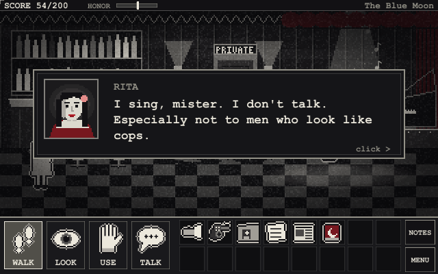
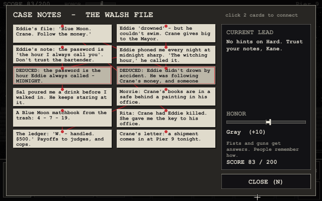
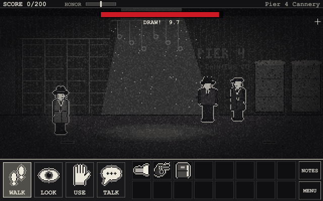
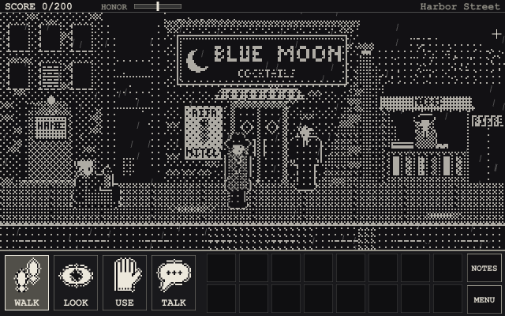
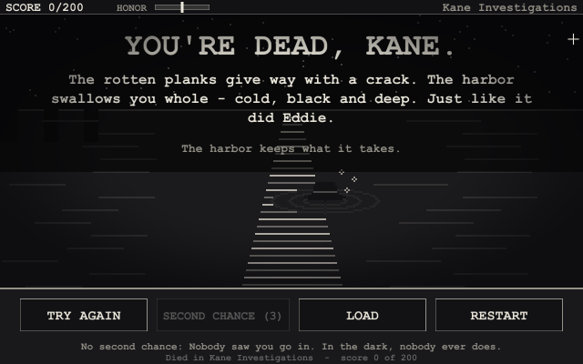
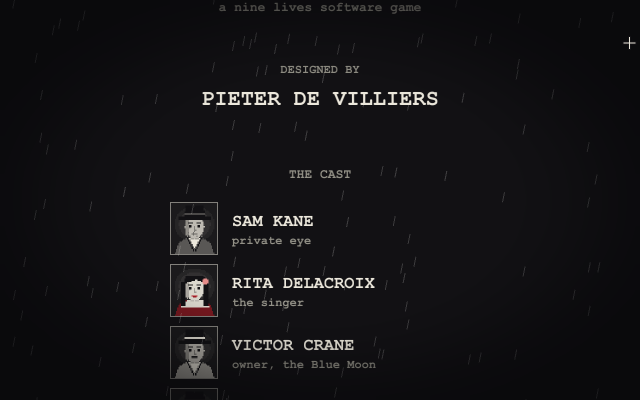

Port Harlow, 1947. It has been raining for eleven days straight. Last night they fished
your partner, Eddie Walsh, out of the harbor. The cops wrote it up as an accident.
Funny thing - Eddie couldn't swim, so he never went near the water.
You are Sam Kane, private eye. Find out who killed Eddie - and then find out who's
protecting the man who did it.
The browser edition saves in your browser. The Windows download is a single .exe
(no installer); Windows may warn that it's from an unknown publisher - choose "More info" then
"Run anyway". Stuck? There's a walkthrough (spoilers!).
The case
Two acts, twelve locations, two hundred points - and eight endings.
Work things out: connect clues in your case notebook to deduce what nobody will tell you.
Witnesses who lie, evidence that was planted, and conclusions that put the wrong person in a cell.
An honor meter: get answers with patience, or with your fists and your .38. People remember which.
Standoffs on a clock, a deadline at midnight, and three difficulty levels.
Sierra-style deaths - and a few second chances, if you've earned them.
Three looks at the press of a key: red accent, grayscale, or the original 1-bit.






Docs
Player's manual - story, controls, deductions, honor, saving (no spoilers)